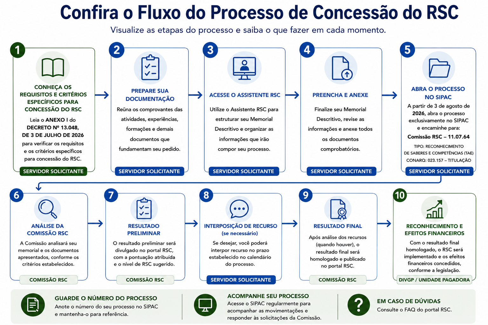

Orientações para preparar sua solicitação de RSC
Informações institucionais reunidas pela Divisão de Gestão de Pessoas (DIVGP) do Hospital das Clínicas da UFPE para apoiar a compreensão do Reconhecimento de Saberes e Competências (RSC), a organização documental e a instrução do processo.

Ferramentas e Documentos
Acesse os recursos práticos para preparar, instruir e acompanhar seu processo.
Como Solicitar
Passo a passo para preparar e protocolar seu processo.
Acessar →FerramentaAssistente RSC
Organize a documentação e gere os documentos utilizados no processo.
Acessar →DocumentosOnde Encontrar Documentos
SOUGOV, SIPAC, Arquivo de Pessoal, DOU e outras fontes institucionais.
Acessar →PublicaçõesBoletim Oficial da UFPE
Pesquise portarias, designações, funções e demais atos administrativos publicados pela UFPE.
Acessar →FontesBiblioteca
Legislação, manuais, ofícios e materiais de apoio.
Acessar →OrientaçõesTutoriais do Assistente e do SIPAC
Consulte instruções práticas para preencher o Assistente RSC e protocolar o processo.
Acessar →Perguntas Frequentes
Consulte as dúvidas sobre elegibilidade, atividades, pontuação, comprovação, Memorial, SIPAC e avaliação.
Antes de começar: posso solicitar o RSC?
O que é o RSC-PCCTAE?
O Reconhecimento de Saberes e Competências (RSC) é um mecanismo de reconhecimento dos conhecimentos e habilidades desenvolvidos pelo servidor ao longo de sua trajetória profissional, observados os requisitos e critérios estabelecidos na legislação.
Quem pode solicitar o RSC?
Servidores ativos e efetivos do Plano de Carreira dos Cargos Técnico-Administrativos em Educação (PCCTAE) que atendam aos requisitos previstos na regulamentação.
Servidores em estágio probatório podem solicitar o RSC?
O RSC não será concedido durante o estágio probatório. Entretanto, atividades realizadas nesse período poderão ser consideradas futuramente, desde que tenham sido desenvolvidas no exercício de cargo integrante da carreira do PCCTAE e atendam aos demais requisitos.
Atividades realizadas durante o estágio probatório podem ser consideradas?
Sim, desde que atendam aos requisitos estabelecidos para o RSC e tenham sido realizadas no exercício de cargo integrante da carreira do PCCTAE.
Posso utilizar atividades realizadas antes de ingressar na UFPE?
Sim. Poderão ser consideradas atividades realizadas antes do ingresso na UFPE, desde que tenham sido desenvolvidas no exercício de cargo integrante da carreira do PCCTAE, atendam aos demais requisitos da regulamentação e sejam devidamente comprovadas.
Posso utilizar atividades realizadas em outra instituição?
Sim. A atividade não precisa ter sido realizada na UFPE. Poderão ser consideradas atividades desenvolvidas em outras instituições, desde que tenham sido realizadas no exercício de cargo integrante da carreira do PCCTAE e sejam devidamente comprovadas.
Mudei de cargo dentro do PCCTAE. Posso utilizar atividades realizadas no cargo anterior?
Sim. As atividades realizadas em outro cargo integrante da carreira do PCCTAE podem ser consideradas, desde que atendam aos requisitos estabelecidos para o RSC.
O RSC altera minha classe ou meu nível na carreira?
Não. O RSC produz efeitos sobre o Incentivo à Qualificação (IQ), não alterando a classe ou o padrão de vencimento do servidor.
Posso solicitar qualquer nível de RSC?
Não. O servidor somente poderá requerer o nível imediatamente superior ao percentual de Incentivo à Qualificação que já possui, observadas as regras aplicáveis.
Existe prazo entre um pedido e outro?
Sim. Deve ser observado o interstício previsto na legislação antes da solicitação de um novo nível de RSC.
O que posso utilizar?
Que tipos de atividades podem ser apresentadas para fins de RSC?
Devem ser observadas as atividades, experiências e requisitos previstos nos Anexos do Decreto nº 13.048/2026. O servidor deverá verificar em qual critério suas experiências podem ser enquadradas.
Atividades desenvolvidas fora da UFPE podem pontuar?
Sim, desde que atendam aos requisitos do RSC, tenham sido realizadas no exercício de cargo integrante da carreira do PCCTAE e sejam devidamente comprovadas.
Cursos realizados antes do ingresso na UFPE podem ser utilizados?
Sim, desde que tenham sido realizados no exercício de cargo integrante da carreira do PCCTAE e atendam aos demais requisitos previstos para o RSC.
Cursos realizados fora da UFPE podem ser utilizados?
Sim. Poderão ser considerados cursos de interesse institucional realizados no exercício do PCCTAE, desde que sejam devidamente comprovados, atendam à regulamentação, não tenham sido utilizados para outra concessão quando houver vedação e sejam apresentados e fundamentados no Memorial.
Cursos EAD são aceitos?
Sim, desde que atendam aos requisitos estabelecidos na regulamentação e sejam devidamente comprovados.
Congressos, eventos, palestras e treinamentos internos podem ser considerados?
Sim, desde que a atividade esteja contemplada nos critérios dos Anexos e seja comprovada mediante documentação admitida pelo art. 4º do Decreto nº 13.048/2026.
Qual é a carga horária mínima para cursos?
A carga horária mínima indicada é de 10 horas, observados os critérios específicos previstos nos Anexos.
O que é considerado curso de interesse institucional?
É o curso ou ação de capacitação que contribua para o desenvolvimento de competências relacionadas à atuação profissional do servidor, às atividades desenvolvidas no âmbito do PCCTAE, às necessidades da unidade de exercício ou aos objetivos e finalidades institucionais da UFPE. O interesse institucional não se limita às atribuições específicas do cargo.
Posso utilizar curso ou atividade que já foi utilizado para outra concessão funcional?
Deve ser observada a vedação prevista na regulamentação quanto à utilização de título, certificado ou atividade já empregado para outra concessão. Antes de incluir o documento no Memorial, verifique se existe impedimento para sua reutilização.
Como funciona a pontuação?
Como é calculada a pontuação do RSC?
A pontuação é atribuída conforme os critérios, valores e limites estabelecidos nos Anexos do Decreto nº 13.048/2026. Antes de elaborar o Memorial, identifique: atividade → critério → pontuação → limite aplicável.
Existe limite de pontuação por critério?
Não há limite geral por critério. Entretanto, é necessário observar a pontuação mínima, a quantidade mínima de critérios específicos e, para os níveis IV, V e VI, as exigências previstas no art. 5º do Decreto nº 13.048/2026.
O mesmo documento pode gerar pontuação em mais de um critério?
Não. Cada documento comprobatório deverá ser utilizado em apenas um critério, não podendo gerar pontuação simultaneamente em dois ou mais critérios.
Minha atividade pode ser enquadrada em mais de um critério. O que devo fazer?
Consulte os Anexos e identifique o critério que melhor corresponda à atividade. Quando houver mais de uma possibilidade, considere também a pontuação correspondente e, respeitadas as regras aplicáveis, indique o enquadramento que entender mais adequado.
Quem define o enquadramento da atividade?
O servidor indica e fundamenta no Memorial o enquadramento pretendido. A análise, o enquadramento definitivo e a atribuição da pontuação competem à Comissão de Avaliação do RSC.
Como comprovar minhas atividades?
Quais documentos podem ser utilizados?
Poderão ser utilizados os documentos comprobatórios previstos no art. 4º do Decreto nº 13.048/2026, desde que exista correspondência entre o documento apresentado e a atividade declarada.
Cursos e capacitações precisam ser comprovados?
Sim. A realização deverá ser demonstrada por certificado, declaração ou documento equivalente admitido pela regulamentação.
Portarias, atas, declarações e publicações podem servir como comprovação?
Sim, desde que sejam documentos admitidos pela regulamentação e permitam identificar adequadamente a atividade, o servidor e, quando necessário, o período de realização.
Como comprovar a autoria de manual, protocolo, parecer, cartilha ou produto técnico?
A autoria poderá ser demonstrada pela própria publicação ou por documentação comprobatória que identifique de forma inequívoca a participação do servidor na elaboração do produto.
Documentos emitidos por outras instituições são aceitos?
Sim, desde que correspondam a atividades ou experiências passíveis de aproveitamento para o RSC e atendam aos requisitos de comprovação previstos na regulamentação.
Preciso apresentar todos os documentos da minha carreira PCCTAE?
Não. Apresente apenas os documentos necessários para comprovar as atividades efetivamente indicadas no Memorial para fins de pontuação.
Quais documentos devem ser anexados ao processo?
O processo deverá conter quatro arquivos:
- Requerimento de Reconhecimento de Saberes e Competências
- Memorial Descritivo
- Comprovante da Última Titulação
- Arquivo único em PDF com os comprovantes das atividades informadas no Assistente RSC
Como devo organizar os anexos que comprovam as atividades?
Reúna em um único arquivo PDF apenas os comprovantes das atividades. O Requerimento, o Memorial Descritivo e o Comprovante da Última Titulação devem permanecer separados para anexação no SIPAC. Confira a legibilidade e preserve a ordem indicada no Assistente.
Onde encontro documentos da minha vida funcional?
Consulte a página <a class="text-link" href="documentos.html" target="_blank" rel="noopener noreferrer">Onde encontrar documentos</a>, que orienta a busca no SOUGOV, nos Boletins, no DOU, no SIPAC e, quando necessário, a solicitação ao Arquivo de Pessoal.
Como obtenho declarações funcionais?
As declarações de vínculo, tempo de serviço, jornada, lotação, tempo averbado, cargos e funções podem ser emitidas automaticamente pelo SOUGOV, com base nos dados cadastrados no SIAPE.
Como comprovo atuação como gestor ou fiscal de contrato?
Solicite uma declaração ao Ordenador de Despesas do respectivo contrato, apresentando as portarias de designação e indicando o período de atuação. A declaração somente poderá abranger o período formalmente respaldado pelas portarias.
Assistente RSC e Memorial Descritivo
O que o Assistente RSC gera?
Ao final do preenchimento, o Assistente organiza as informações e gera:
- Requerimento de Reconhecimento de Saberes e Competências;
- Memorial Descritivo;
- anexos renomeados e organizados conforme as atividades e os documentos informados.
O Assistente abre automaticamente o processo no SIPAC?
Não. O Assistente organiza as informações e os documentos, mas a abertura e o envio do processo devem ser realizados pelo servidor no SIPAC.
O que é o Memorial?
É o documento no qual o servidor apresenta as atividades e experiências que pretende utilizar para o RSC, indicando o enquadramento nos critérios e a documentação comprobatória correspondente.
Como elaborar o Memorial?
A UFPE disponibiliza o Assistente RSC-PCCTAE para auxiliar na elaboração e na organização das informações. Recomenda-se redigir e revisar inicialmente o texto em um editor, como o Microsoft Word, e depois inseri-lo no campo Trajetória Profissional do Assistente.
Qual é a extensão recomendada para a Trajetória Profissional?
O Assistente recomenda entre 3.000 e 6.000 caracteres, embora o campo aceite até 10.000 caracteres.
Basta relacionar meus documentos no Memorial?
Não. O Memorial deve apresentar e fundamentar a trajetória, demonstrando a relação entre a atividade desenvolvida, o critério escolhido e o documento que a comprova.
Preciso indicar o critério correspondente a cada atividade?
Sim. Recomenda-se estabelecer uma relação clara: atividade realizada → critério escolhido → documento comprobatório.
Como justificar uma atividade no Memorial?
A justificativa deve ser objetiva e demonstrar a correspondência entre a experiência apresentada, o critério escolhido e o documento comprobatório.
Existe modelo de Memorial?
O Memorial é um texto individual. O Assistente RSC possui um campo específico para sua elaboração, e o portal apresenta uma sugestão de organização na página <a class="text-link" href="memorial.html" target="_blank" rel="noopener noreferrer">Memorial (Trajetória)</a>.
Como protocolar e acompanhar o pedido?
Quando poderei solicitar o RSC na UFPE?
A partir de 3 de agosto de 2026.
Onde devo abrir o processo?
O processo deverá ser aberto no SIPAC, conforme o passo a passo apresentado na página <a class="text-link" href="como-solicitar.html" target="_blank" rel="noopener noreferrer">Como solicitar</a>.
Qual tipo de processo devo selecionar no SIPAC?
Qual Classificação CONARQ devo utilizar?
O que devo informar no campo Assunto?
Informe o nível de RSC pretendido. Exemplo: <strong>Solicitação de Reconhecimento de Saberes e Competências – RSC IV</strong>.
Quem deve constar como interessado?
O próprio servidor, com nome completo e matrícula SIAPE.
Para qual unidade devo encaminhar o processo?
Qual será o fluxo do processo?
Servidor → SIPAC → Comissão RSC → Formare → Divisão de Pagamentos, conforme a regulamentação institucional e o Manual do Servidor.
Como acompanho meu processo?
Guarde o número do processo e acompanhe regularmente sua tramitação no SIPAC. Caso haja solicitação de complementação, atenda dentro do prazo informado.
Como será feita a avaliação?
Quem avaliará meu processo?
O processo será analisado pela Comissão de Avaliação do RSC, constituída e organizada conforme a regulamentação da UFPE.
Qual é o prazo para análise?
A Comissão deverá realizar a análise no prazo máximo de até 120 dias, contados do protocolo do requerimento ou da data de complementação da documentação solicitada.
Se faltar algum documento, meu pedido será automaticamente indeferido?
O pedido será analisado com base na documentação apresentada. Caso ela seja insuficiente para comprovar as atividades e o servidor não alcance a pontuação mínima, o pedido poderá ser indeferido e o processo devolvido ao servidor.
Posso solicitar reconsideração contra o resultado?
Sim. O servidor terá 10 dias para solicitar reconsideração à Comissão.
Quando começam os efeitos financeiros?
Os efeitos financeiros obedecem ao disposto no Decreto nº 13.048, de 3 de julho de 2026.
Nenhuma pergunta encontrada.